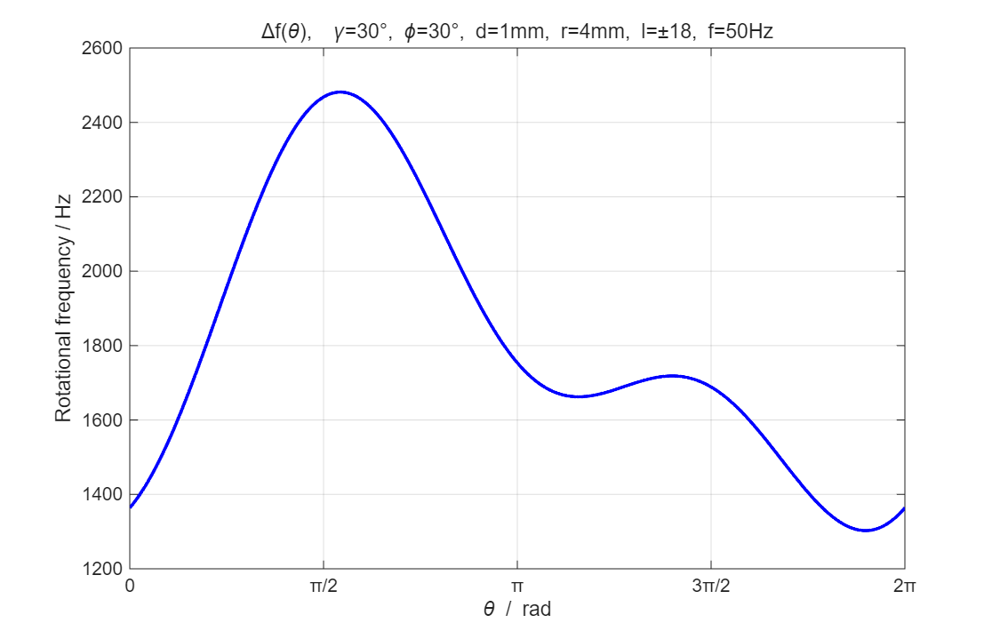
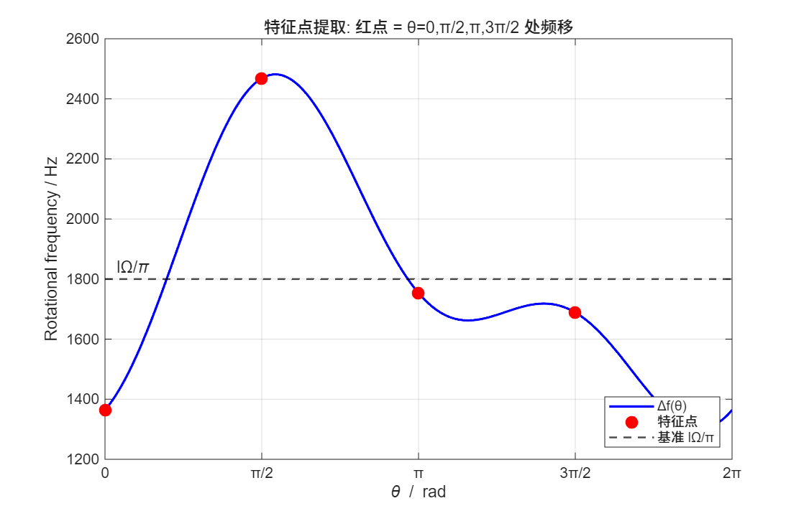
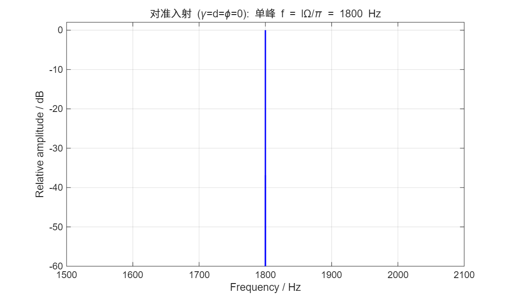
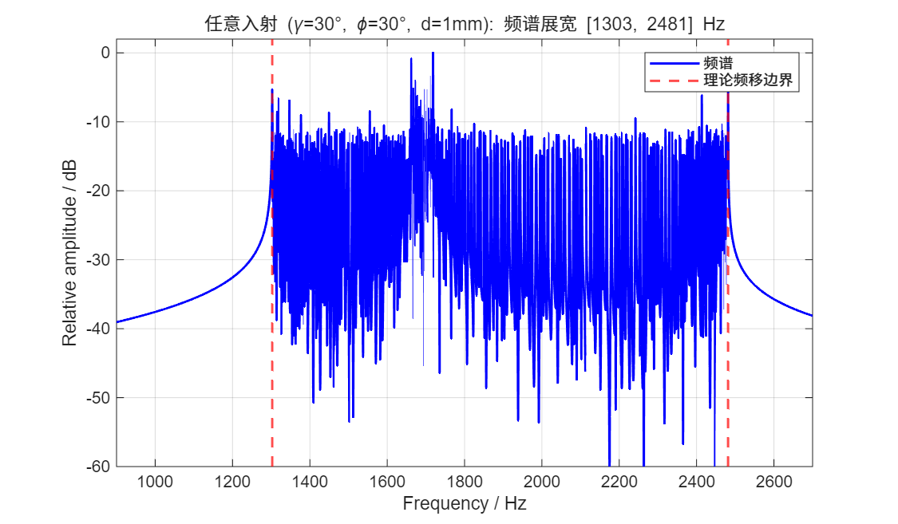

复现丁友等 《涡旋光任意入射条件下的旋转物体转速探测》 （红外与激光工程, 2021, 50(9): 20210451）。 用叠加态涡旋光照射旋转平板，从反射光拍频频谱提取转速。 特征点几何平均法反推转速误差 0.0000%， 任意入射频谱展宽区间与理论边界完全吻合。
一句话：涡旋光的坡印廷矢量是斜的，照到旋转表面上就会产生多普勒频移。
涡旋光携带轨道角动量（OAM），波前是螺旋面。坡印廷矢量相对光轴倾斜， 倾斜角 α 满足 sinα = l/(kr)。当光照射旋转物体时，表面散射点的旋转线速度 在坡印廷矢量方向有非零投影，产生旋转多普勒频移（Lavery et al., Science 2013）。
光轴与转轴重合时，叠加态 ±l 光束的拍频频移为 Δf = lΩ/π， 其中 Ω = 2πf 是旋转角速度。测得拍频即可反推转速 f = Δf/(2l)。
实际中光束往往倾斜入射、存在横向偏移。此时频移随散射点方位角 θ 分布， 频谱会展宽。丁友 2021 给出了频移分布的解析公式（公式 10）和 特征点提取方法（公式 11/12），可以从展宽频谱中恢复出真实转速。
叠加态 ±l 涡旋光
旋转平板散射
反射光拍频频谱
任意入射频移分布（公式 10）与特征点提取（公式 11/12）。
| 公式 | 内容 | 说明 |
|---|---|---|
| 公式 10 | Δf(θ) = (lΩ/π)[sin²θ/cosγ + cosγ·cos²θ + (d/r)(sinθ·cosφ − cosθ·sinφ·cosγ)] | 任意入射频移随方位角 θ 的分布 |
| 公式 11 | Δf₀, Δf_{π/2}, Δf_π, Δf_{3π/2} | θ = 0, π/2, π, 3π/2 四个特征点 |
| 公式 12 | f_mod = √[((Δf₀+Δf_π)/2)·((Δf_{π/2}+Δf_{3π/2})/2)] = lΩ/π | 几何平均，对偶点平均后 d、φ 项抵消 |
| 仿真参数 | 取值 |
|---|---|
| 拓扑荷 | l = ±18 |
| 旋转频率 | f = 50 Hz |
| 倾斜角 γ | 30° |
| 横向位移 d | 1 mm |
| 散射半径 r | 4 mm |
| 方位夹角 φ | 30° |
任意入射频移分布（公式 10）与特征点提取（公式 12）的复现。




| 项目 | 结果 |
|---|---|
| 基准频移 lΩ/π | 1800.0000 Hz |
| 特征点提取 f_mod | 1800.0000 Hz |
| 反推转速 | 50.0000 Hz（误差 0.0000%） |
| 任意入射频移范围 | [1302.71, 2481.44] Hz |
| 频谱展宽区间 | [1303, 2481] Hz（与理论一致） |
包含两部分：花瓣模旋转多普勒仿真 + 丁友 2021 文献复现。
petal_mode_beam.m 生成 LG(+l) + LG(−l) 叠加态花瓣模， 含 (√2r/w)^|l| 暗心因子，l=1~5 的花瓣分布逐一验证。
rotating_petal_signal.m 用角向傅里叶法快速生成旋转花瓣模的拍频信号， extract_beat_freq.m 做 FFT 提取拍频。对准入射下理论拍频 f_beat = 2l·f， 反推转速误差 < 0.01%。
reproduce_main.m 复现公式 10 频移分布曲线、公式 11/12 特征点提取、 对准入射单峰频谱、任意入射频谱展宽、四种入射工况对比，共 5 张图。
| 项目 | 论文 | 本复现 | 影响 |
|---|---|---|---|
| 公式 (12) 形式 | 算术平均（排版丢根号） | 几何平均 √(…) | 与文献实验值 1903.58 Hz 吻合 |
| 验证方式 | 实验测量 | 数值仿真 | 无噪声，误差为 0 |
| 花瓣模部分 | 未涉及 | 额外 POV 仿真 | 补充拍频物理直觉 |
关键修正：文献原文公式 (12) 排版丢失了根号，本复现采用几何平均形式 √(2012×1801) = 1903.6 Hz，与文献实验值 1903.58 Hz 吻合，验证了几何平均的正确性。
MATLAB R2018b+，无需工具箱。
% 1. 花瓣模旋转多普勒仿真 cd POV main_rotational_doppler % 2. 丁友 2021 文献复现 cd ../reproduce_ding2021 reproduce_main
@article{ding2021rotational,
title = {涡旋光任意入射条件下的旋转物体转速探测},
author = {丁友 and 丁源圣 and 邱松 and 刘通 and 任元},
journal = {红外与激光工程},
volume = {50},
number = {9},
pages = {20210451},
year = {2021},
doi = {10.3788/IRLA20210451}
}
@article{lavery2013spinning,
title = {Detection of a spinning object using light's
orbital angular momentum},
author = {Lavery, M. P. J. and others},
journal = {Science},
volume = {341},
number = {6145},
pages = {537--540},
year = {2013}
}
本复现为独立实现，非官方代码。复现文献为丁友等（红外与激光工程, 2021）。 公式 (12) 采用几何平均形式（修正原文排版丢失的根号），与文献实验值吻合验证。 仅用于学术研究与学习交流，引用请注明出处。